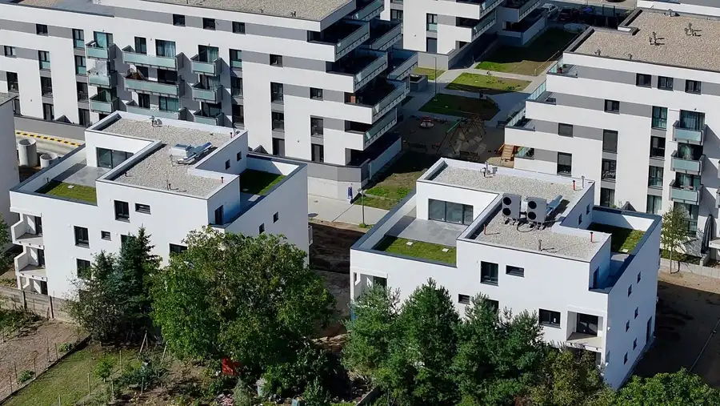
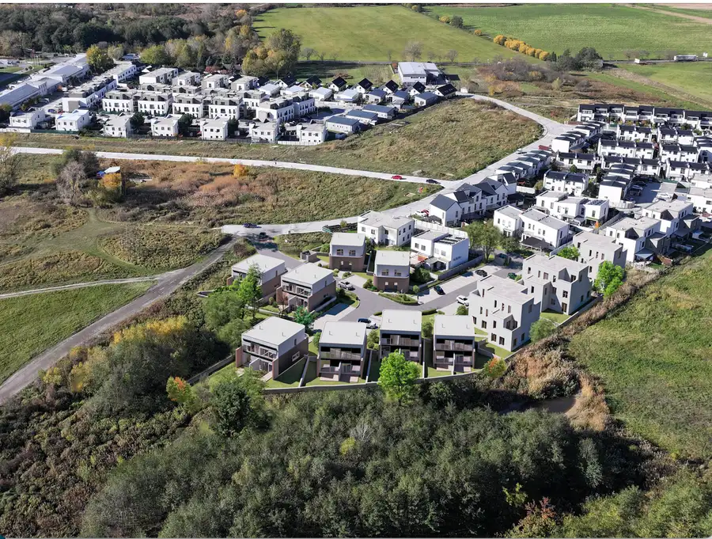
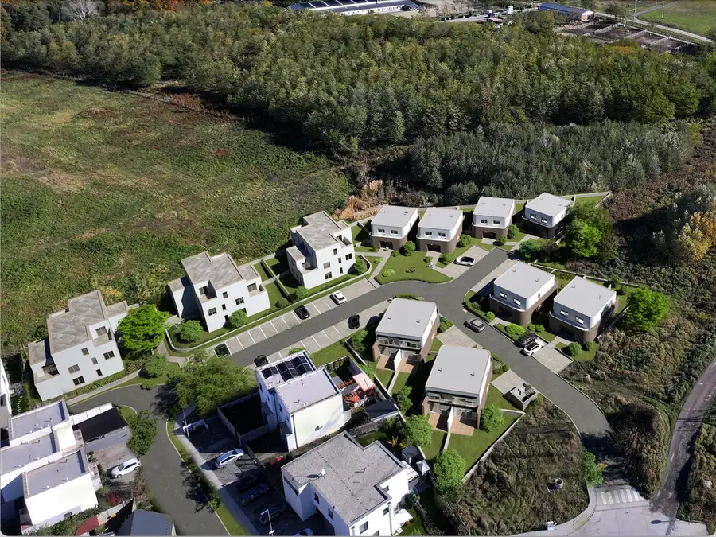
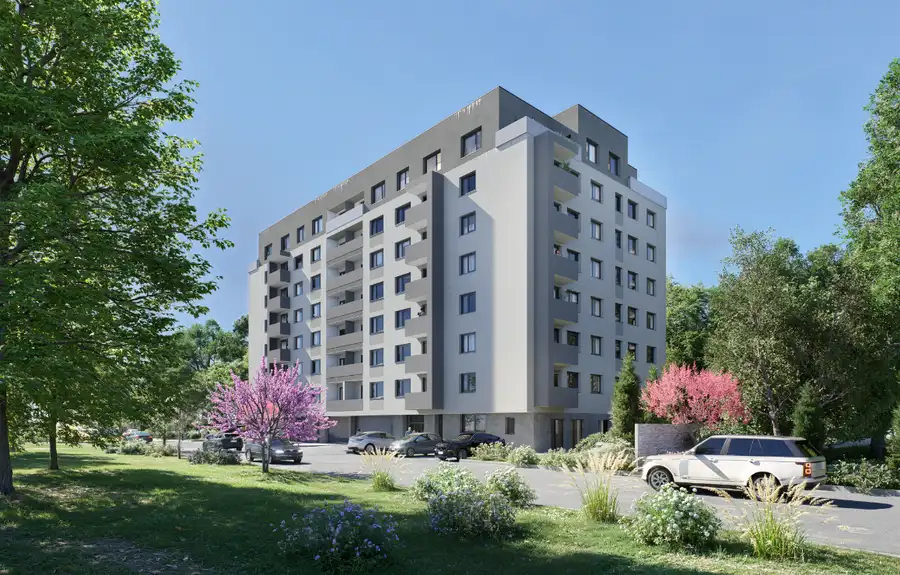
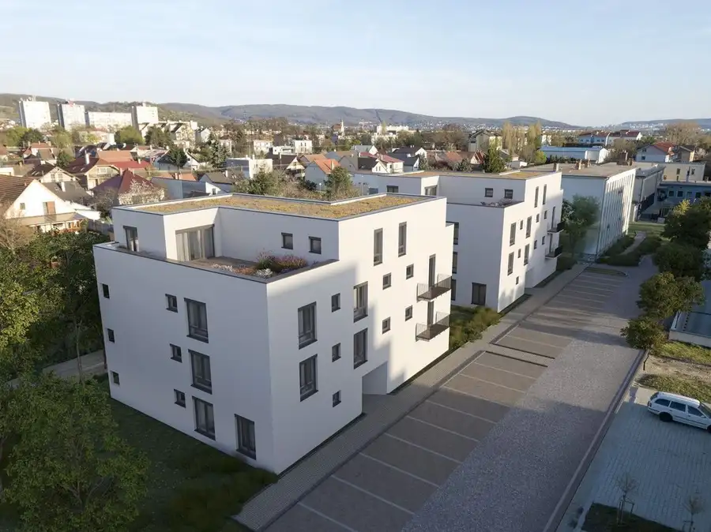

Aktuálna ponuka
6 nehnuteľností, predovšetkým byty. Každá má vlastnú stránku s fotkami, popisom a mapou.
Prezrieť ponuku
 Tu bude Vaša fotkapošlite ju e-mailom, obratom ju vymeníme
Tu bude Vaša fotkapošlite ju e-mailom, obratom ju vymenímeKristína Nedomová · Realitná maklérka · Sisters Real
Volám sa Kristína Nedomová, som realitná maklérka kancelárie Sisters Real. Predaj, prenájom a odhad ceny nehnuteľností, lokality Stupava a Bratislava.
Viac o mneVolám sa Kristína Nedomová. Som realitná maklérka kancelárie Sisters Real a pôsobím predovšetkým v lokalitách Stupava a Bratislava (Bratislavský kraj).
6 nehnuteľností, predovšetkým byty. Každá má vlastnú stránku s fotkami, popisom a mapou.
Prezrieť ponuku
Stupava, Bratislava a okolie. Ponuku si môžete prezrieť podľa lokality.
Nehnuteľnosti v lokalite
Odhad trhovej ceny, príprava prezentácie, obhliadky, zmluvy a odovzdanie nehnuteľnosti.
Dohodnúť stretnutieBytNové
258 990 €Výnimočná lokalita v obkolesení prírody
Stupava
3-izbový82 m²1. podlažie
BytNové
233 990 €4 i. byt so 126 m2 predzáhradkou a výhľadom na les
Stupava
4-izbový179.98 m²1. podlažie
BytNové
204 990 €3 izbový byt s terasou a krásnym výhľadom na les
Stupava
3-izbový78.24 m²2. podlažie
Byt
189 990 €Posledný voľný terasový byt s krásnym výhľadom
Stupava
2-izbový62 m²4. podlažie

Byt 299 990 €Novostavba 3 izbového bytu za výbornú cenu Rača, Bratislava 3-izbový75.95 m²2. podlažie
Byt 173 990 €* Posledný 2 izbový byt v novostavbe s predzáhradkou * Stupava 2-izbový67.28 m²1. podlažieTomuto výberu zatiaľ nezodpovedá žiadna ponuka. Napíšte mi, čo hľadáte.
Každý špendlík je jedna nehnuteľnosť z mojej ponuky. Kliknite a pozrite sa.
© prispievatelia OpenStreetMap
Na čo sa pýtate najčastejšie, skôr než sa stretneme.
Odhad trhovej ceny vychádza z aktuálnych ponúk a predajov v lokalite, nie z cenníkových tabuliek. Podmienky Vám poviem pri prvom telefonáte.
Najprv obhliadka a odhad ceny, potom príprava prezentácie (fotografie, popis, inzercia), obhliadky so záujemcami, rezervačná zmluva, kúpna zmluva, návrh na vklad do katastra a odovzdanie nehnuteľnosti. O každom kroku viete vopred.
Najrýchlejšie cez WhatsApp alebo telefón. Termín stretnutia alebo obhliadky dohodneme podľa Vás.